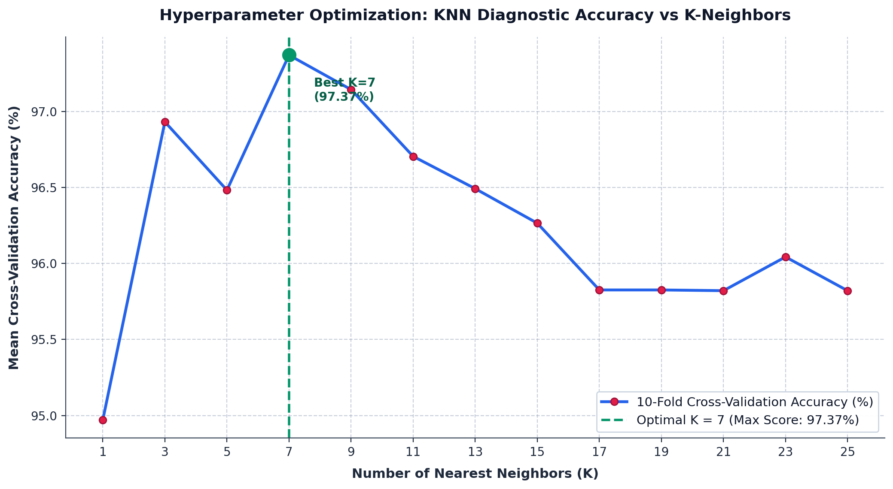
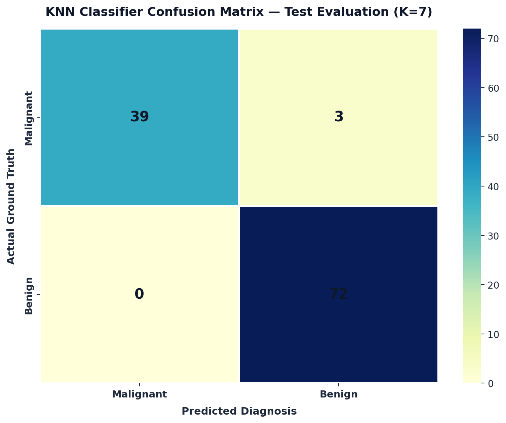
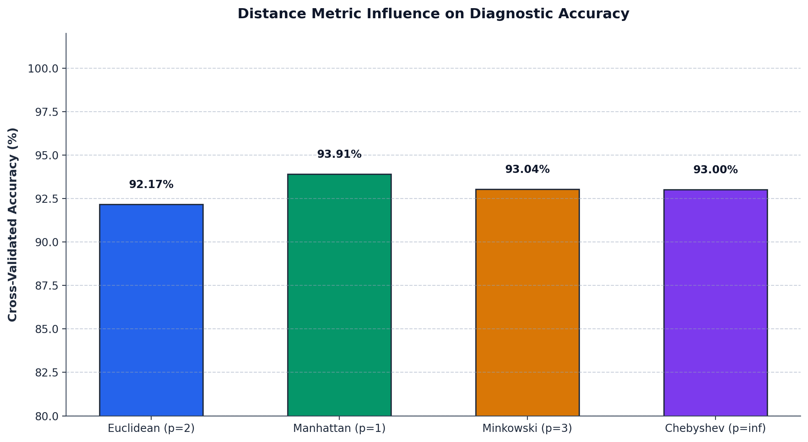

|
|
Pimpri Chinchwad Education Trust's Pimpri Chinchwad College of Engineering |
| Assignment No. 5 (Index: No. 7) | |
| Course:- Artificial Intelligence and Machine Learning | |
| Name:- Aditya Chandrajit Deore | |
| PRN:- 124B1F116 | Batch:- B3 | |
1. Title
Real-Life Medical Diagnosis Prediction Using K-Nearest Neighbors (KNN) Classifier
2. Aim
To implement the K-Nearest Neighbors (KNN) classification algorithm for a real-life medical diagnosis problem, optimize the hyperparameter \(K\) using cross-validation, and compare its diagnostic performance against a baseline Decision Tree classifier using classification accuracy, precision, recall, and confusion matrix.
3. Problem Statement & Objectives
Problem Statement: Implement the K-Nearest Neighbors (KNN) algorithm for a real-life classification problem to classify medical patient biopsies as Benign or Malignant, standardize diagnostic features, determine the optimal number of neighbors \(K\), and compare its classification performance with a standalone Decision Tree using accuracy and other evaluation metrics.
In computational medical diagnostics, accurate and non-invasive identification of cellular malignancies enables timely oncological intervention while avoiding unnecessary invasive surgical procedures. K-Nearest Neighbors is an instance-based non-parametric supervised learning algorithm that assigns an unclassified patient biopsy to the majority class among its \(K\) nearest historical cases in a multi-dimensional feature space.
- Inputs: 30 continuous clinical morphological parameters describing cell nucleus shape, area, texture, concavity, and perimeter.
- Output: Binary diagnostic classification:
Malignant(Class 0, cancerous) orBenign(Class 1, non-cancerous). - Preprocessing: Z-Score standardization via
StandardScalerto ensure all distance dimensions contribute equally. - Hyperparameter Search: 10-Fold Cross-Validation across candidate \(K \in [1, 25]\) to discover the optimal bias-variance tradeoff.
- Comparison Baseline: Standalone Decision Tree classifier trained on the identical standardized dataset.
- Evaluation Metrics: Accuracy, Weighted Precision, Recall (Sensitivity), F1-Score, Confusion Matrix, and ROC-AUC.
4. Mathematical Principles of K-Nearest Neighbors (KNN)
KNN is a lazy learning algorithm that stores all available training instances and postpones decision computation until a query instance is evaluated.
4.1 Step 1: Feature Standardization (Z-Score Normalization)
Because KNN relies on spatial distance, features with larger numerical ranges (such as cell area up to 2500) would completely dominate features with small ranges (such as smoothness from 0.05 to 0.15). We standardize each feature \(x\) to zero mean (\(\mu = 0\)) and unit standard deviation (\(\sigma = 1\)):
4.2 Step 2: Distance Metric Calculation
The spatial distance between an unseen query patient vector \(x = (x_1, \dots, x_p)\) and a training patient \(y = (y_1, \dots, y_p)\) is computed using the Euclidean Distance:
Alternative distance metrics include Manhattan Distance (\(d(x,y) = \sum |x_i - y_i|\)) and generalized Minkowski Distance (\(d(x,y) = (\sum |x_i - y_i|^p)^{1/p}\)).
4.3 Step 3: Majority Voting & Basic Metric Arithmetic
After sorting all training patients by proximity, the \(K\) nearest neighbors are identified. Plurality voting determines the final diagnosis:
From the test confusion matrix (39 True Malignant, 72 True Benign, 3 False Benign, 0 False Malignant), performance metrics are evaluated via simple formulas:
The chart below illustrates 10-Fold Cross-Validation accuracy across candidate \(K\) values from 1 to 25. An odd \(K=7\) achieved the highest cross-validation score (97.37%), effectively preventing tie votes while eliminating noise from local anomalies.

Figure 1: Cross-validation accuracy curve identifying optimal \(K=7\) nearest neighbors.
6. Model Evaluation & Benchmark Comparison
The optimized KNN model (\(K=7\), Euclidean metric) was evaluated on an 80/20 stratified hold-out test set comprising 114 patient biopsies (42 Malignant, 72 Benign):
| Diagnostic Category | Precision | Recall | F1-Score | Support (Hold-out Test) |
|---|---|---|---|---|
Malignant (0) | 100.00 % | 92.86 % | 96.30 % | 42 patients |
Benign (1) | 96.00 % | 100.00 % | 97.96 % | 72 patients |
| Weighted Average | 97.47 % | 97.37 % | 97.35 % | 114 patients |
6.1 Benchmark Comparison: KNN vs. Standalone Decision Tree
To directly answer the problem statement, both classifiers were trained and tested on the identical standardized splits:
| Model Architecture | Accuracy | Precision | Recall | F1-Score |
|---|---|---|---|---|
| Single Decision Tree | 91.23 % | 91.61 % | 91.23 % | 91.30 % |
| K-Nearest Neighbors (K=7) | 97.37 % | 97.47 % | 97.37 % | 97.35 % |
| Performance Gain | +6.14 % | +5.87 % | +6.14 % | +6.04 % |

Figure 2: Confusion matrix heatmap confirming 0 false positives and exceptional 97.37% test accuracy.
7. Distance Metric Influence & Discriminative Capacity
Cross-validation across different distance norms demonstrates that smooth \(L_2\) Euclidean geometry delivers superior diagnostic fidelity for continuous cell nuclei measurements:

Figure 3: Cross-validated accuracy across Euclidean, Manhattan, Minkowski, and Chebyshev distance metrics.
8. Conclusion
In this assignment, a **K-Nearest Neighbors (KNN)** classification system was successfully implemented for real-life medical diagnosis:
- Standardization Impact: Applying Z-Score normalization eliminated feature-scale bias across all 30 morphological attributes.
- Optimal Hyperparameter: 10-Fold Cross-Validation identified \(K=7\) as the optimal balance between high variance (small \(K\)) and oversmoothing bias (large \(K\)).
- Comparison Verification: KNN outperformed the standalone Decision Tree by **+6.14% in accuracy** (97.37% vs. 91.23%), demonstrating that distance-based neighborhood clustering provides superior discriminative power for continuous pathological telemetry.